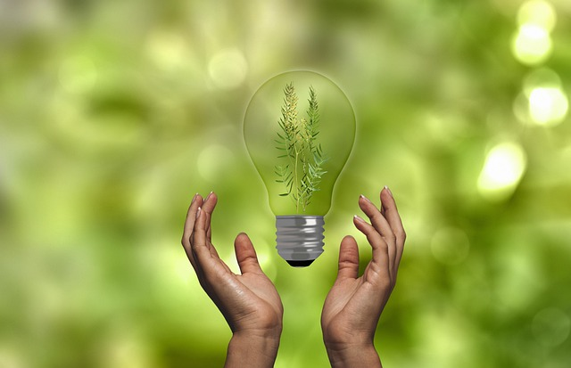

Agricultura
A agricultura é uma prática essencial para a sobrevivência humana e o desenvolvimento de sociedades ao longo da história. Ela envolve o cultivo de plantas e a criação de animais para fornecer alimentos, fibras, biocombustíveis e outros produtos necessários para a vida cotidiana. Existem diversas técnicas agrícolas, que variam conforme o clima, o solo e os recursos disponíveis. A agricultura pode ser dividida em várias categorias: Agricultura de Subsistência: Focada na produção suficiente para alimentar uma família ou comunidade, sem grandes excedentes para venda. Agricultura Comercial: Voltada para a produção em larga escala, destinada à venda no mercado. Isso inclui culturas como soja, milho e cana-de-açúcar no Brasil. Agricultura Orgânica: Utiliza métodos sustentáveis e evita o uso de pesticidas e fertilizantes químicos, visando preservar o meio ambiente. Agrofloresta: Combina o cultivo de árvores com a agricultura, promovendo a biodiversidade e melhorando a qualidade do solo. No Brasil, a agricultura desempenha um papel crucial na economia, sendo um dos maiores exportadores de produtos agrícolas do mundo. Além disso, enfrenta desafios como mudanças climáticas, degradação do solo e necessidade de práticas mais sustentáveis. Se você quiser saber mais sobre algum aspecto específico da agricultura ou sobre práticas sustentáveis, é só me avisar!
Pecuária
A pecuária é a prática de criar animais para a produção de alimentos, fibras, couro e outros produtos. Assim como a agricultura, a pecuária é fundamental para a economia e a alimentação da população mundial. Aqui estão alguns aspectos importantes sobre a pecuária: Tipos de Pecuária: Pecuária de Corte: Focada na criação de gado bovino, ovinos, caprinos e suínos para a produção de carne. Pecuária Leiteira: Voltada para a produção de leite, principalmente com gado bovino, mas também com cabras e ovelhas. Avicultura: Criação de aves, como frangos e perus, para a produção de carne e ovos. Apicultura: Criação de abelhas para a produção de mel e outros produtos apícolas. Importância Econômica: A pecuária é uma parte significativa da economia agrícola em muitos países, incluindo o Brasil, que é um dos maiores produtores e exportadores de carne bovina do mundo. A indústria também gera empregos e contribui para o desenvolvimento rural. Desafios: A pecuária enfrenta vários desafios, como: Sustentabilidade: A necessidade de práticas que reduzam o impacto ambiental, como desmatamento e emissões de gases do efeito estufa. Doenças: O controle de doenças animais é crucial para garantir a saúde dos rebanhos e a segurança alimentar. Bem-estar Animal: A preocupação com as condições em que os animais são criados tem ganhado atenção nos últimos anos. Práticas Sustentáveis: Muitas fazendas estão adotando práticas mais sustentáveis, como sistemas integrados que combinam cultivo e criação animal, rotação de pastagens e manejo adequado dos recursos hídricos. Se você tiver interesse em um aspecto específico da pecuária ou quiser saber mais sobre práticas sustentáveis nessa área, estou aqui para ajudar!
Sustentabilidade
A sustentabilidade é um conceito que busca equilibrar as necessidades do presente sem comprometer a capacidade das futuras gerações de atenderem às suas próprias necessidades. Ela abrange aspectos econômicos, sociais e ambientais, promovendo um desenvolvimento que respeita os limites do planeta. Aqui estão alguns pontos-chave sobre sustentabilidade: Três Pilares da Sustentabilidade: Econômico: Envolve práticas que garantam crescimento econômico, mas de forma justa e responsável, evitando a exploração excessiva dos recursos naturais. Social: Foca na equidade, inclusão e melhoria da qualidade de vida das pessoas, garantindo acesso a bens e serviços essenciais. Ambiental: Refere-se à proteção dos ecossistemas, conservação da biodiversidade e uso responsável dos recursos naturais. Práticas Sustentáveis: Existem várias estratégias para promover a sustentabilidade em diferentes setores, como: Agricultura Sustentável: Uso de técnicas que preservam o solo, reduzem o uso de pesticidas e fertilizantes químicos e promovem a biodiversidade. Energia Renovável: Investimento em fontes de energia como solar, eólica e hidrelétrica para reduzir a dependência de combustíveis fósseis. Redução de Resíduos: Práticas como reciclagem, compostagem e redução do consumo ajudam a minimizar o impacto ambiental. Mudanças Climáticas: A sustentabilidade é fundamental no combate às mudanças climáticas. Adotar práticas que reduzam as emissões de gases do efeito estufa é crucial para mitigar os efeitos dessas mudanças no planeta. Consumo Consciente: Promover um consumo mais consciente é essencial para a sustentabilidade. Isso inclui escolher produtos locais, reduzir o desperdício e optar por marcas que praticam responsabilidade social e ambiental. Educação e Conscientização: A educação é uma ferramenta poderosa para promover a sustentabilidade. Informar as pessoas sobre sua importância e como podem contribuir é fundamental para criar uma sociedade mais consciente. Se você quiser explorar mais sobre algum aspecto específico da sustentabilidade ou como implementá-la em sua vida cotidiana, é só me avisar!